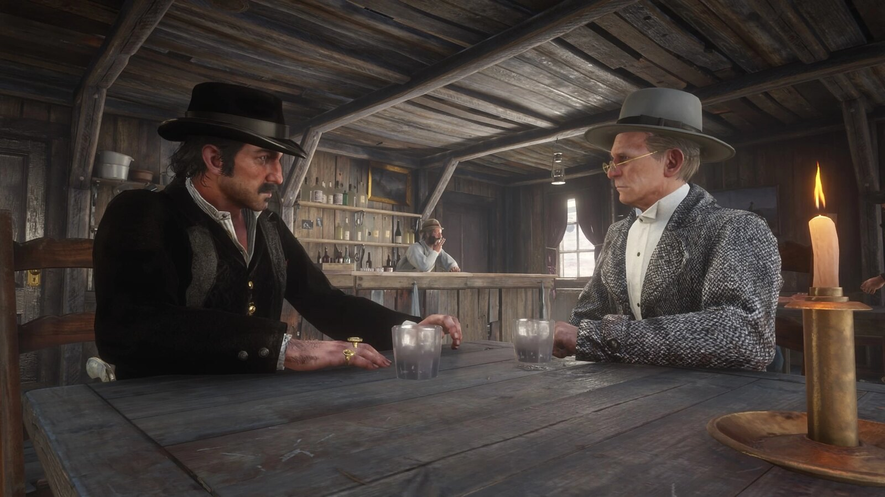

Character · Van der Linde gang
Leopold Strauss
Leopold Strauss is a character of Red Dead Redemption 2 (2018), set in 1899. An Austrian immigrant, he keeps the books of the Van der Linde gang and runs its money-lending business. From the Horseshoe Overlook chapter onward, he sends Arthur Morgan to collect debts in the "Money Lending and Other Sins" missions. One of them takes Arthur to the farmer Thomas Downes, who coughs blood on him; Arthur is later diagnosed with tuberculosis. Strauss also takes part in the riverboat robbery of "A Fine Night of Debauchery" with Arthur, Javier Escuella and Josiah Trelawny. At Beaver Hollow he leaves the gang: depending on the player, Arthur throws him out or he leaves on his own. In 1907 Charles Smith tells John Marston that the Pinkertons arrested Strauss and that he died in their custody without giving up the gang.
He is played by Howard Pinhasik, an American actor.
- Name
- Leopold Strauss
- Origin
- Vienna, Austria
- Born
- Not given in the game (the official guide says he left Vienna for America at 17; the Red Dead Wiki estimates about 1846)
- Died
- Between 1899 and 1907, in Pinkerton custody (reported by Charles Smith in 1907)
- Nationality
- Austrian
- Affiliation
- Van der Linde gang (until 1899)
- Role
- Bookkeeper and money lender
- Games
- Red Dead Redemption 2
- Voiced by
- Howard Pinhasik (voice and motion capture)
Biography
Origins
The games give no date of birth for Strauss. An official guide places his childhood in Vienna and his crossing to America at seventeen (see Personality). According to the Red Dead Wiki, Dutch van der Linde says in "The Sheep and the Goats" that he took Strauss in years earlier, when he had just come off the boat.
Strauss adds details of his own in camp. He says that by the age of twelve his brother was beating night watchmen to steal bread for the family, and that his father sold his little sister, Anna, into servitude when she was nine. During camp poker games, he says that his brother taught him the game one winter in Vienna and that he never beat him. The Red Dead Wiki adds an account that it does not tie to a specific line: he crossed with an uncle and landed in New York during the draft riots of 1863, and the sight of the burning city killed the uncle with a heart attack, leaving the young man alone.
Red Dead Redemption 2 (1899)
Chapter 1: Colter
Strauss is among the members who escape Blackwater and take refuge in the snow at Colter. He stays in camp with the women, Jack and the older men. In "Enter, Pursued by a Memory", when Arthur Morgan and Javier Escuella bring back the wounded John Marston, Strauss is with Hosea Matthews, who explains that he has been discussing the gang's route with him and that they will keep heading east once the weather breaks. Strauss thanks Arthur as Hosea leads him away to get warm (see Relationships).
In "Eastward Bound", the gang settles at Horseshoe Overlook, above Valentine. Strauss walks past Dutch, Hosea and Arthur with a clipboard, then tells them he is going into town to try to drum up some business. Dutch lets him go and remarks that he prefers robbing banks to usury, which he finds more dignified. Later in the mission, Hosea tells Arthur that Strauss has come back from Valentine smiling and that there must already be a list of people he has pressed money on.
Chapter 2: Horseshoe Overlook
In "Money Lending and Other Sins I", Strauss offers Arthur a cut of his loans in exchange for collecting them, since borrowers pay back a man like Arthur more readily. He names three debtors: Chick Matthews, a hand at Guthrie Farm; Mr. Wróbel, a smallholder at Painted Sky; and Lilly Millet, a maid at Emerald Ranch. When Arthur mocks Dutch's talk of helping people, Strauss calls it legal work and says debtors belong in prison. He asks Arthur to put the money in the camp's box and to avoid killing anyone, which is bad for business. In "Money Lending and Other Sins II", Arthur lassos Chick, who gives him a map to his hidden money, beats Wróbel and takes his belongings, and takes the sum from Lilly's boyfriend, Cooper, after a fistfight.
Once a debt is in the box, Strauss gives Arthur a fourth name in "Money Lending and Other Sins III": Thomas Downes, a farmer and preacher he met in Valentine, who he says is more slippery than he looks. He tells Arthur to beat him if he does not pay. If Arthur has just read the letter from Mary Linton, Strauss finds him lost in thought, complains that Downes was ridiculous when he went to see him himself, and asks Arthur not to be gentle. At Downes Ranch, Downes swings a rake at Arthur, who blocks it. Arthur beats him, and Downes coughs blood into his face. Edith Downes comes out, tells Arthur to leave and warns him that her husband is not well. Arthur leaves empty-handed. Back at camp, Arthur tells Strauss that Downes is close to death, that the family is destitute and that lending them money was foolish. Strauss replies that only desperate people are interested in his offers.
In "The Sheep and the Goats", Strauss is with Dutch at Keane's Saloon in Valentine, arguing with him, when Arthur and John arrive after selling a stolen flock. Dutch sends Strauss and John to collect the payment. Leviticus Cornwall, whose train the gang robbed, arrives with armed men, has the two held at gunpoint outside the saloon and calls for Dutch. While Dutch talks, Arthur draws and frees them, and Strauss wrestles his captor's gun away. During the gunfight in the main street, Strauss is shot in the leg, and the gang uses a wagon as cover to protect him. Arthur then lifts him onto the back of John's horse, and Dutch, John and Strauss ride off while Arthur holds off the law. Dutch decides the gang must move.
In "A Strange Kindness", the gang leaves Horseshoe Overlook for Clemens Point, on Flat Iron Lake in Lemoyne, and Strauss moves with it.
Chapter 3: Clemens Point
In "Money Lending and Other Sins IV", Strauss tells Arthur that the pursuit of freedom is expensive, for the gang and for some of the locals. He prefers to call his business banking and argues that his money feeds the women and children of the camp. His new list has two names: Winton Holmes, a former refinery worker turned hunter, camped in the hills north of Strawberry, and Gwyn Hughes, an apprentice undertaker in Rhodes. In Rhodes, Hughes has no money and digs up a Mrs. Claypole in the churchyard to hand Arthur her diamond brooch, while Arthur keeps people away. Holmes, out of work, says he will pay with the pelt of a rare white cougar he has been tracking near Mount Shann. In the cougar's den, the animal kills him; Arthur kills it and sells the pelt to the butcher in Strawberry.
In "Sodom? Back to Gomorrah", just as Arthur, Bill Williamson, Karen Jones and Lenny Summers are about to ride out to rob the Valentine bank, Strauss tells Arthur that Thomas Downes has apparently died. He adds that the widow, Edith, will take on the debt, and asks Arthur to collect it from her when he can, since the sum is large. After the robbery, Arthur rides to Downes Ranch, where Edith hands over the money after a tense exchange with her son, Archie.
The morning after the gang's attack on Braithwaite Manor, where it looks for the kidnapped Jack Marston, the Pinkerton agents Andrew Milton and Edgar Ross come to Clemens Point in "The Battle of Shady Belle". Milton offers the others three days to disappear if Dutch surrenders; the gang refuses. The Red Dead Wiki lists Strauss in this mission and in "Blood Feuds, Ancient and Modern" without describing a role for him. The gang then moves into Shady Belle, an abandoned plantation house near Saint Denis, once Arthur and John have cleared it of the Lemoyne Raiders.
Chapter 4: Saint Denis
At Shady Belle, Strauss gives Arthur a single debtor in "Money Lending and Other Sins V": Algie Davison, a fisherman living at Catfish Jacksons. Arthur coughs while Strauss hands him the job. Inside, Davison sends his son Nate for drinks and goes to the sink for a money box, which turns out to be empty. He then attacks Arthur, with his fists or a knife depending on Arthur's choice. After the fight, Arthur finds Nate under his bed. The boy points him to money he has kept from his father in his footlocker, and Arthur takes it.
In "A Fine Night of Debauchery", Strauss joins Josiah Trelawny, Arthur and Javier on the Grand Korrigan, a riverboat casino moored at Saint Denis, to rob the businessman Desmond Blythe. According to the mission page, Strauss and Trelawny have fixed the poker game so that Arthur wins. Arthur leaves his weapons in the carriage, and the four board and split up. At the table, Strauss sits where Arthur can see him and signals whether to bet. Arthur busts the other players, then beats Blythe twice, the second time for his Reutlinger pocket watch. Javier, disguised as a guard, then leads Arthur to the boat's vault, and they empty it. When their cover is blown, a gunfight breaks out; according to the mission page, a guard can take aim at Javier's back, and Strauss knocks him out with a wine bottle if Arthur does not shoot first. The four fight their way to the deck, jump into the river and swim ashore. On the bank, they split the take, and Strauss confirms that the watch is a genuine Reutlinger; Arthur keeps it.
In "Horsemen, Apocalypses", the O'Driscolls send Kieran Duffy's mutilated body into Shady Belle and attack the camp. Strauss takes cover inside the house with Mary-Beth Gaskill, Abigail Marston, Jack and Susan Grimshaw while the others defend it. He does not take part in the Saint Denis bank robbery that ends the chapter.
Chapter 5: Guarma
Strauss is not on the ship that wrecks on Guarma. He stays with the members who leave Shady Belle for Lakay, an abandoned settlement in the bayou, under the lead of Sadie Adler and Charles Smith. In "Fleeting Joy", Arthur reaches Lakay first, followed by Micah Bell and Javier, then Dutch. Strauss tells Dutch that the group owes its survival mostly to Sadie. Bill arrives last. The Pinkertons attack Lakay soon after, and Arthur, Sadie and Bill drive them back. In "That's Murfree Country", Dutch decides to head north, Arthur and Charles clear a cave at Beaver Hollow of the Murfree Brood, and the gang, Strauss included, moves there.
Chapter 6: Beaver Hollow
At Beaver Hollow, Strauss hands Arthur, now ill, a last list in "Money Lending and Other Sins VI": J. John Weathers and Arthur Londonderry. Weathers, found at Three Sisters by his broken-down wagon, has no money and offers his winter supplies instead. Soldiers from Fort Wallace arrive to arrest him as a deserter; Arthur helps him fight them off, but the wagon catches fire and the supplies burn. Weathers then calls out a pregnant Wapiti woman who travels with him, and Arthur regrets not simply helping him mend the wagon. Weathers offers a silver locket to settle the debt; Arthur can take it or forgive the debt.
At the Annesburg mine, the foreman tells Arthur that Londonderry is dead and sends him to the widow. At her house in Sawbone Clearing, Mrs. Londonderry tells him she has nothing left. The debts killed her husband, who wore himself out at work to repay them, and the house will soon be gone. She asks whether he wants her son's shoes, their food or her body. Arthur can forgive the debt, or forgive it and give her money. She thanks him and tells him that nobody should be treated like this. Arthur apologizes, and she goes back into the house.
In "Money Lending and Other Sins VII", ashamed, according to the mission page, of having been used by Strauss, Arthur rides back to camp and confronts him, at night or by day depending on when the player returns. Arthur stuffs Strauss's belongings into his bag. He spares his life, while saying he ought not to. With high honor, he tells Strauss that he shames the gang and has wrecked the lives of desperate people; with low honor, he is angrier about his own wasted time and calls Strauss a creep, a maggot and a parasite. Strauss does not understand and protests that he was Arthur's friend. Arthur throws money at him and orders him out. Strauss rides away from Beaver Hollow on one of the camp's horses. Opinions in camp about the exile are divided (see Relationships).
Strauss can also leave without being thrown out. According to the mission page, if Arthur starts the last collections but does not bring back the money, Strauss confronts him about it, then leaves the camp. According to the character page, Arthur then says he will not be missed, and Strauss answers with a sarcastic remark about Arthur's charm before riding away. If Arthur never accepts the last list, Strauss leaves off-screen. His fate in the epilogue is the same in every case.
Epilogue (1907)
Epilogue 2: Beecher's Hope
Strauss does not appear in the epilogue. In "Bare Knuckle Friendships", after Charles's fight in Saint Denis, Charles and John walk to the docks to fetch Charles's bag. John tells Charles that Micah betrayed the gang. Charles tells John that the Pinkertons arrested Strauss, questioned him about the gang and that he died in their custody without giving anything up. The mission page of the Red Dead Wiki adds that he was tortured. According to the wiki's character page, John answers that some people are strong in ways that cannot be seen. His arrest came after he left the gang; the game gives neither its date nor its place, nor those of his death, and, according to the Red Dead Wiki, he has no marked grave in the game world.
Personality
Rockstar Games' official description of Strauss, published on September 6, 2018 (see Marketing), reads: "Originally hailing from Austria, Herr Strauss is responsible for keeping the gang's books and running their money lending operation. A serious, somewhat shifty and unemotional man, he has all the qualities a loan shark needs."
A character page from an official guide, reproduced on the Red Dead Wiki, repeats that description and adds his background: "He grew up very poor in Vienna, in the Austro-Hungarian Empire, and had some serious health problems during childhood. At age 17, the young Strauss was sent on a boat to the New World. After years of scamming the wrong people, he fell in with Dutch mainly for protection and has been with him ever since." The Red Dead Wiki and TheGamer (September 5, 2019) both point out that the Austro-Hungarian Empire was only created in 1867, years after the childhood the guide describes.
In camp he works at his desk and skips the gang's parties, according to the Red Dead Wiki's camp events page. The wiki also notes a sarcastic wit, aimed mostly at Arthur. After chapter 4, the Red Dead Wiki describes him as increasingly anxious for the gang's safety; at Beaver Hollow he talks to Susan Grimshaw about the situation, stammering as he speaks.
In his own words
When Arthur mocks Dutch's talk of helping people in "Money Lending and Other Sins I & II", Strauss answers: "It's legal work, Mr. Morgan. Debtors belong in prison... we are doing them a favor." Told that Thomas Downes is dying and destitute, he replies in "Money Lending and Other Sins III": "Well, people who aren't desperate... don't seem so interested in my propositions." Earlier in the same mission, he tells Arthur how to treat Downes: "Not so gentle. I don't like his kind. Superior."
At Clemens Point, in "Money Lending and Other Sins IV", Arthur calls his trade sharking. Strauss corrects him: "I prefer to call it banking." When Arthur points out that he is not the one handing out the beatings, Strauss answers: "No, but I am the one feeding the women and children in the camp. What choice do we have, Mr. Morgan?"
Names
Dutch, Hosea and Arthur address him as "Herr Strauss", and Arthur and Hosea also say "Mr. Strauss". He calls Arthur "Herr Morgan" or "Mr. Morgan". His first name is rarely used: Arthur gives his full name, Leopold Strauss, to the debtors Wróbel and Gwyn Hughes. Several debtors take him for a German. Chick Matthews shouts "German shouldn't a lent to me then" as he flees, Arthur himself tells Wróbel that he borrowed from "a German man", and Winton Holmes calls him "the German-speaking feller". Wróbel, in Polish, warns against trusting Prussians.
Appearance
The guide's portrait shows a thin, older man with short gray hair, light eyes and round wire-rimmed glasses, wearing a striped shirt, a blue cravat, a waistcoat and tall boots, holding a ledger in front of his chest. According to the Red Dead Wiki, he wears a colored scarf at Colter, and a gallery picture shows him in pajamas at Horseshoe Overlook.
Relationships

Arthur Morgan
Arthur collects Strauss's debts from chapter 2 to chapter 6, beats Thomas Downes on his behalf, and can throw him out of the gang at Beaver Hollow (see Biography). During the party for Sean's return Arthur can invite him to join in; Strauss says he is in an excellent mood and stays at his desk.

Dutch van der Linde
Strauss keeps the books of Dutch's gang. When he leaves to lend money in Valentine in "Eastward Bound", Dutch sees him off with "Of course, Herr Strauss". In "The Sheep and the Goats" Arthur and John find the two men arguing in Keane's Saloon, and at Lakay Strauss credits Sadie when Dutch returns (see Biography).

Hosea Matthews
At Colter, Hosea leads him away from the cold: "Come on, Herr Strauss. Let's get warm." On the fishing trip of "The New South", Hosea jokes that the Cornwall business scared the living daylights out of Mr. Strauss. At Shady Belle Strauss explains to him by the fountain what real coffee is; Hosea answers, sarcastically, that he looks forward to it.

John Marston
Held hostage together in Valentine in "The Sheep and the Goats", the two men escape on John's horse (see Biography). In 1907 John learns of Strauss's death from Charles (see Charles Smith).

Charles Smith
Charles is the one who tells John, in 1907, of Strauss's death in Pinkerton custody (see Biography).

Bill Williamson
Eating with Strauss at Horseshoe Overlook, Bill asks him what people eat in Germany. Strauss corrects him: he is Austrian. Bill then asks what they eat in Australia, and Strauss remarks that it is a miracle Bill does not fall over more often. At Clemens Point Bill tells him he heard Strauss soiled himself during the Cornwall business in Valentine; Strauss corrects him again, saying he was shot in the leg. After the expulsion, according to the Red Dead Wiki, Bill asks Arthur whether he will be thrown out next, and Arthur does not deny it.

Micah Bell
At the Horseshoe Overlook campfire Micah questions Strauss's methods. Strauss defends his business. Micah answers that he prefers to shoot a man openly rather than play his friend and stab him in the back, at least most of the time. Strauss leaves, uncomfortable. When Arthur throws Strauss out at Beaver Hollow, Micah argues with him, saying Strauss was too much of an asset to lose.

Orville Swanson
At Horseshoe Overlook, Swanson's request for money at Strauss's desk is turned down before he has finished asking, because of what he already owes. When Swanson says he is dying, Strauss wants to know how a dying man would pay him back; Swanson walks off calling him heartless. When Arthur carries the drunk Reverend back to camp in "Who is Not Without Sin", Strauss comments: "I can smell the whiskey from here." At Beaver Hollow, according to the Red Dead Wiki, Strauss confides his distress to a now sober Swanson, who answers with hope, and Strauss dismisses him as mad. Swanson approves of the expulsion, saying it was time.

Sadie Adler
Strauss is among the survivors Sadie leads to Lakay while Dutch's group is on Guarma, and he credits her for their safety when Dutch returns (see Biography). According to the Red Dead Wiki, in "Icarus and Friends" she tells Arthur that Strauss is a bundle of nerves. When Arthur throws him out, Sadie approves and says she won't miss him.

Susan Grimshaw
At Beaver Hollow Susan and Pearson sleep next to Strauss. If Arthur throws him out at night, the two wake up and watch, frightened, as Arthur pushes Strauss toward their beds while he packs. According to the Red Dead Wiki, Susan tells Arthur afterward that she knows he did the right thing and will not protest.

Simon Pearson
Pearson wakes up beside Susan when Arthur throws Strauss out at night (see Susan Grimshaw). According to the Red Dead Wiki, Pearson tells Arthur afterward that he is disappointed Arthur did not consult the others first.

Abigail Marston
Abigail shelters in the Shady Belle house with him in "Horsemen, Apocalypses" (see Biography). According to the Red Dead Wiki, she later tells Arthur, like Pearson, that she is disappointed he threw Strauss out without asking the others.

Tilly Jackson
After the expulsion, according to the Red Dead Wiki, Tilly asks Arthur whether he means to throw her out too; Arthur assures her he does not.

Mary-Beth Gaskill
According to the Red Dead Wiki, Mary-Beth asks Arthur why he threw Strauss out, and he explains his reasons to her.

Jack Marston
Jack also asks Arthur where Strauss has gone; according to the Red Dead Wiki, Arthur does not tell him.

Javier Escuella
On the riverboat of "A Fine Night of Debauchery", Strauss can save Javier from a guard who takes aim at his back (see Biography). The four men share the take once ashore.

Josiah Trelawny
Trelawny plans the riverboat job of "A Fine Night of Debauchery", and the two men rig its poker game together, according to the mission page. They escape from the boat with Arthur and Javier (see Biography).

Leviticus Cornwall
In "The Sheep and the Goats" the industrialist's guards hold Strauss and John hostage in Valentine to draw Dutch out, after the gang robbed Cornwall's train (see Biography).
Thomas and Edith Downes
Thomas Downes, a farmer Strauss met in Valentine, is the debtor Arthur beats in "Money Lending and Other Sins III" (see Biography). According to the Red Dead Wiki's camp events page, his widow Edith may later come to the Horseshoe Overlook camp with part of the money and tell Strauss of her husband's death. If Arthur is nearby, he can say he did not mean to kill Downes; Strauss remarks, unmoved, that the man was sick anyway. The wiki's character page gives another version, in which Edith curses Strauss and he passes the debt on to her.
Skills, weapons and horses
Money lending and the camp ledger
Strauss lends the gang's money to outsiders and sends Arthur to collect. According to the Red Dead Wiki's mission and camps pages, dropping any of those first debts into the donation box beside Dutch's tent unlocks the camp ledger, which lies next to it. The ledger is used to buy camp upgrades and restock the wagons. One of the wagons is Strauss's: its three upgrades add more kinds of tonics and liquors to the camp's supplies.
Cards
Strauss is one of the camp's poker players, with John, Pearson, Susan, Uncle, Lenny and Swanson, according to the Red Dead Wiki. His card sense is put to use on the riverboat in "A Fine Night of Debauchery" (see Biography).
Weapons and horse
According to the Red Dead Wiki, Strauss holds a pair of Double-Action revolvers in the game's third trailer and when Agent Milton first comes to the camp. When he leaves the camp in chapter 6, he rides away, according to the wiki, on one of the camp's spare horses, a Morgan or a Tennessee Walker.
Missions
The English Red Dead Wiki lists 19 story missions of Red Dead Redemption 2 for Strauss, seven of them in the "Money Lending and Other Sins" strand he gives to Arthur. The French Red Dead Wiki lists 12. The table below follows the English list and adds the epilogue mission in which his death is reported.
| Mission | Chapter | Strauss's role |
|---|---|---|
| Outlaws from the West | 1. Colter | Listed by the wiki for the gang's flight from Blackwater into the mountains. Neither the mission page nor the transcript names him. |
| Enter, Pursued by a Memory | 1. Colter | At camp with Hosea when Arthur and Javier bring back John. |
| Eastward Bound | 1. Colter | Arrives at Horseshoe Overlook with the gang and leaves for Valentine to start lending money. |
| Money Lending and Other Sins I | 2. Horseshoe Overlook | Mission giver. Hands Arthur three debtors: Chick Matthews, Mr. Wróbel and Lilly Millet. |
| Money Lending and Other Sins II | 2. Horseshoe Overlook | Mission giver. Arthur collects the three debts; the first deposit opens the camp ledger. Reward for parts I and II: 119 dollars. |
| Money Lending and Other Sins III | 2. Horseshoe Overlook | Mission giver. Sends Arthur to Thomas Downes, who coughs blood into Arthur's face. Required to advance the story. |
| The Sheep and the Goats | 2. Horseshoe Overlook | Taken hostage with John by Cornwall's men outside Keane's Saloon, then shot in the leg during the escape from Valentine. |
| A Strange Kindness | 2. Horseshoe Overlook | Moves with the gang to Clemens Point. |
| Money Lending and Other Sins IV | 3. Clemens Point | Mission giver. Hands Arthur two debtors: Winton Holmes, killed by the white cougar he was hunting, and Gwyn Hughes, who pays with a dead woman's brooch. |
| Sodom? Back to Gomorrah | 3. Clemens Point | Tells Arthur that Thomas Downes has died and that his widow, Edith, owes the debt. Arthur collects it after the bank robbery. |
| Blood Feuds, Ancient and Modern | 3. Clemens Point | Listed by the English wiki only; the mission page does not mention him. |
| The Battle of Shady Belle | 3. Clemens Point | Listed by the English wiki only. The gang refuses the deal Milton offers at Clemens Point and moves to Shady Belle. |
| Money Lending and Other Sins V | 4. Saint Denis | Mission giver. Sends Arthur to Algie Davison at Catfish Jacksons. Reward for the player: 10 dollars. |
| A Fine Night of Debauchery | 4. Saint Denis | Boards the Grand Korrigan with Arthur, Javier and Trelawny, signals Arthur's play at the poker table, escapes by swimming ashore and confirms the value of Blythe's watch. |
| Horsemen, Apocalypses | 4. Saint Denis | Takes cover inside the Shady Belle house during the O'Driscoll attack. |
| Fleeting Joy | 5. Guarma | At Lakay, tells Dutch that the group owes its survival mostly to Sadie. |
| That's Murfree Country | 5. Guarma | Moves with the gang to Beaver Hollow. |
| Money Lending and Other Sins VI | 6. Beaver Hollow | Mission giver. Hands Arthur his last two debtors, J. John Weathers and Arthur Londonderry. Reward for the player: honor, and a silver locket if Arthur takes it from Weathers. |
| Money Lending and Other Sins VII | 6. Beaver Hollow | Thrown out of the gang by Arthur, who packs his bag and throws money at him. |
| Bare Knuckle Friendships | Epilogue 2 | Mentioned. Charles tells John that Strauss died in Pinkerton custody without giving up the gang. |
Quotes
The lines below are given as spoken in the game, in the original English, with the mission and the person addressed; [...] marks a cut.
The money-lending business
Herr Morgan, Herr Morgan. [...] Busy, my friend?
Money Lending and Other Sins I (RDR2, chapter 2), to Arthur, who answers "Mr. Strauss." between the two lines, before Strauss offers him a cutYou know how it is... people is happy to borrow off someone like me, but... more enthusiastic paying back to someone like you.
Money Lending and Other Sins I (RDR2, chapter 2), to Arthur, who asks whether he is lending alreadyPut the debts in the deed box and try not to kill them... it's very bad for business.
Money Lending and Other Sins I (RDR2, chapter 2), to ArthurHe's more slippery than he seems. I've tried being polite... don't take any nonsense.
Money Lending and Other Sins III (RDR2, chapter 2), to Arthur, about Thomas DownesWell, it turns out the pursuit of freedom... is not a cheap business. Not for us... and not for some of the locals.
Money Lending and Other Sins IV (RDR2, chapter 3), to Arthur at Clemens PointWith enough encouragement... both of them.
Money Lending and Other Sins IV (RDR2, chapter 3), when Arthur asks how many of the two debtors will be able to payThat man, the debtor, Thomas Downes... apparently he's dead.
Sodom? Back to Gomorrah (RDR2, chapter 3), to Arthur, who answers that Downes did not seem very wellHis wife... I believe he has a wife and child. She will assume the debt of course.
Sodom? Back to Gomorrah (RDR2, chapter 3), to Arthur, just before the Valentine bank robbery
Elsewhere in the story
Gentlemen, I'm going to head into the local town, and you know... see if I can strike up a little business.
Eastward Bound (RDR2, chapter 1), to Dutch, Hosea and Arthur at Horseshoe OverlookI don't believe in absolutes, just shades of gray. Compromises.
The Sheep and the Goats (RDR2, chapter 2), to Dutch (quote list of the Red Dead Wiki)Nice watch. Yes, it's a Reutlinger alright.
A Fine Night of Debauchery (RDR2, chapter 4), on the riverbank, about Blythe's watch (quote list of the Red Dead Wiki)You know... they-they say the sick delude themselves. I was your friend.
Money Lending and Other Sins VII (RDR2, chapter 6), to Arthur, who is throwing him out (quote list of the Red Dead Wiki)
Said about him
I prefer robbing banks to usury... seems more dignified somehow.
Dutch van der Linde, Eastward Bound (RDR2, chapter 1), as Strauss leaves for ValentineAnd Strauss came back with that creepy little smile on his face. I'm sure there's a whole list of unfortunates... he's forced money upon.
Hosea Matthews to Arthur, Eastward Bound (RDR2, chapter 1)
Development and performance
Casting
According to the Red Dead Wiki, Pinhasik provides both the voice and the motion capture performance for Strauss. In a list of facts about the character published on September 5, 2019, TheGamer's Jerrad Wyche wrote that Pinhasik's facial scan was used to give Strauss his look. Wyche named the television series Angels in America, in which Pinhasik played a character's father, as his only other notable role. Pinhasik has also appeared as a guest in The Marvelous Mrs. Maisel.
Cut content and concept art
The Red Dead Wiki lists an unused vest and unused boots for Strauss in the game files. The files also hold a cut item request in which Strauss was to ask Arthur for reading glasses; its icon is still in the game data. Concept art published by the wiki shows Strauss with Bill, Karen, Tilly, Uncle, Mary-Beth and Pearson. According to the Red Dead Wiki's page on cut content, some of the game's concept art was shown for a time at the National Museum of Scotland, and in it Strauss is drawn as a short man.
Reception
Game Informer ranking
In Game Informer's staff ranking of the 24 members of the Van der Linde gang, published on December 27, 2018, Strauss comes 23rd, ahead of Micah Bell only. The entry reads: "It's bad enough that Strauss is a loan shark. However, it's his cruel business that results in Arthur getting infected with tuberculosis when our antihero goes to collect a debt from the Downes family. It doesn't help he's downright sleazy and seems to derive pleasure from causing others misery."
Other assessments
In an opinion piece published by Polygon on November 22, 2018, "Red Dead Redemption 2 is a confection of cowboy clichés", Colin Campbell cited Strauss among the game's stock characters: "Leopold Strauss is a slightly sinister money lender complete with a German accent and a taste for cruelty." In his list of facts published by TheGamer on September 5, 2019, Jerrad Wyche wrote that Pinhasik "did an excellent job of bringing the Austrian loan shark to life and was able to toe the line between a heartless crook and loyal gang member", and that "no one could ever question Strauss' loyalty to his gang."
Other media and legacy
Marketing
On September 6, 2018, Rockstar posted Strauss's portrait and character description on Twitter, in a series covering the members of the gang, and The Hollywood Reporter reproduced the series the next day. In the composite image of the 23 gang members that illustrates Wikipedia's list of the game's characters, Strauss stands in the front row, between Jack and Trelawny.
Trivia
- After "Eastward Bound", Strauss and Uncle, who is asleep, are the only people in camp with no new dialogue.
- According to the Red Dead Wiki's camp events page, Strauss's camp events do not play while "Money Lending and Other Sins I & II" is available, nor, like those of Javier and Trelawny, while "A Fine Night of Debauchery" is available.
- In "The Sheep and the Goats", the mission fails if Arthur waits too long to shoot the men holding John and Strauss: Dutch loses patience, and both hostages are killed. If Arthur shoots Strauss's captor in the head, the man does not fall, and Strauss still wrestles the gun out of his hand.
- According to the character page, while "The Sheep and the Goats" is still open, Strauss and Dutch may come out and fire on anyone attacking Arthur near the mission marker in Valentine, such as bounty hunters.
- One of the Gold Medal objectives of "A Fine Night of Debauchery" is to win the poker game without Strauss's help. If Arthur shoots the guard that Strauss can knock out with a bottle before Strauss reaches him, the player loses honor.
- According to the mission page of "Money Lending and Other Sins VII", if Arthur follows Strauss as he leaves, Strauss and his horse vanish and leave his bag behind; a player who is fast enough, or uses mods, can kill him, which costs half of the player's honor.
- Parts I to III of "Money Lending and Other Sins" are not optional, but completing them unlocks the rest of the strand. According to the mission pages, the later parts are optional honor story missions and count toward the Lending a Hand trophy, which requires completing every optional honor story mission in the game.
Gallery
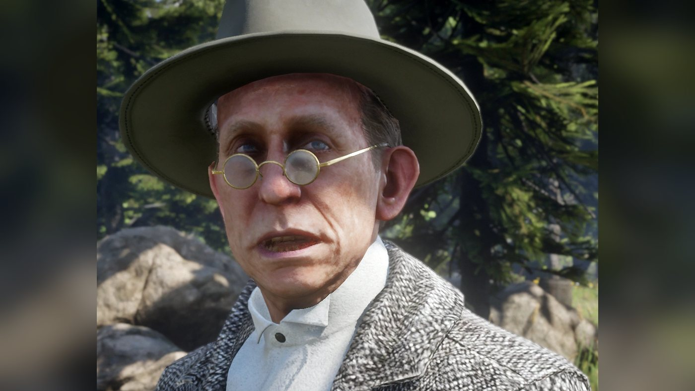
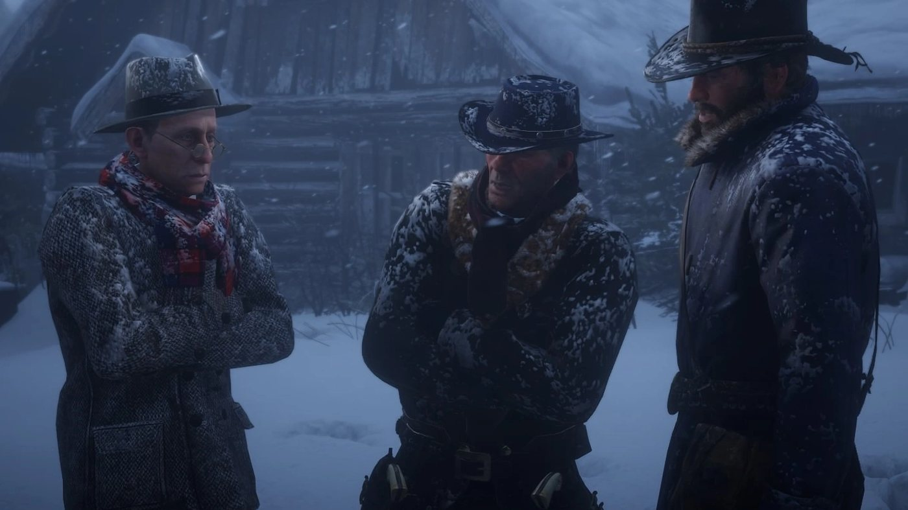
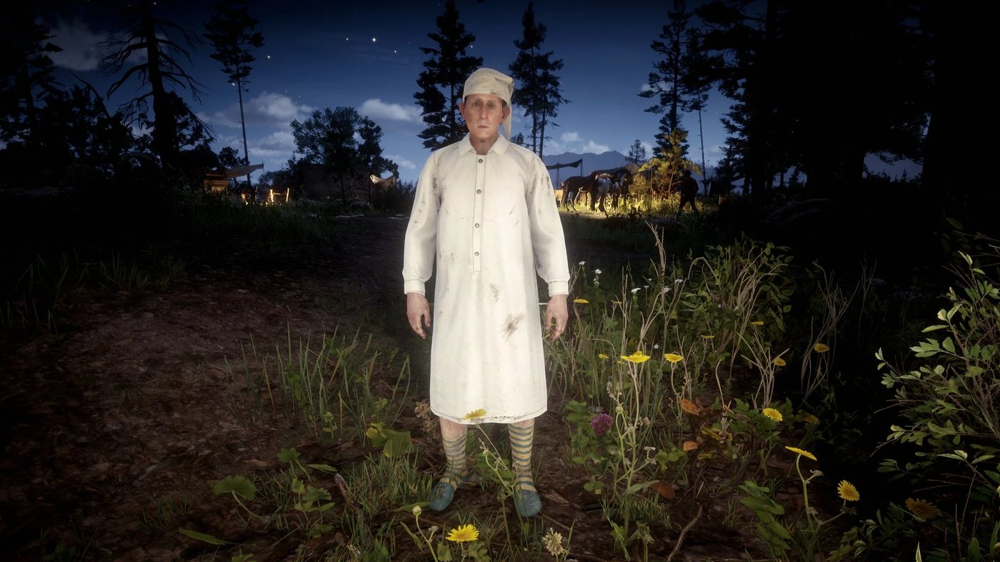
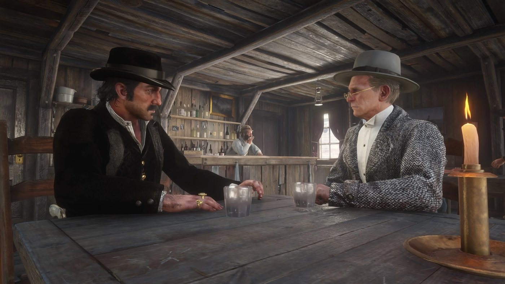
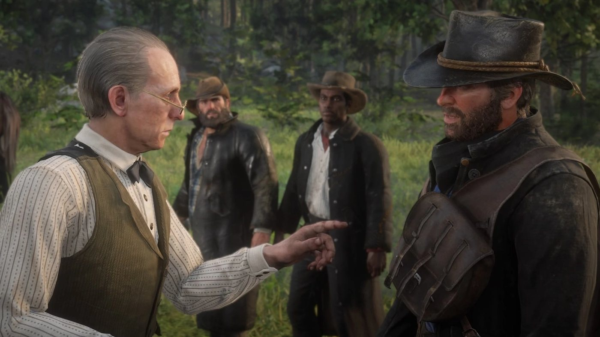
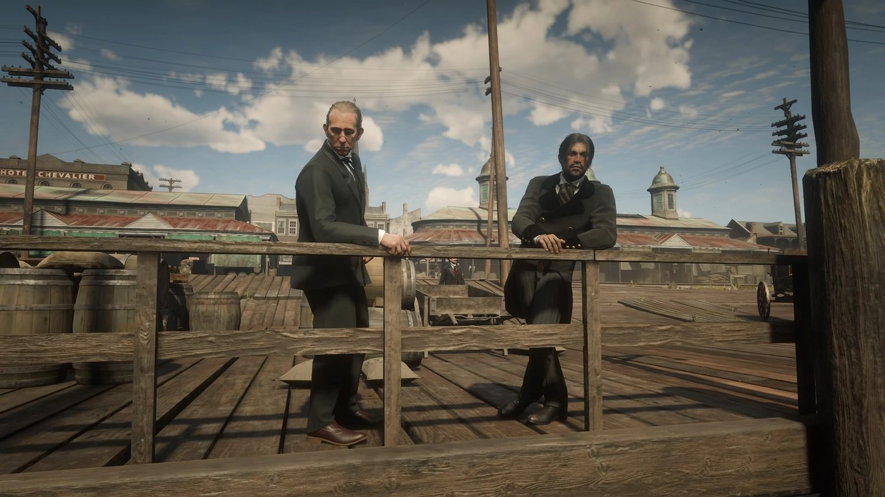
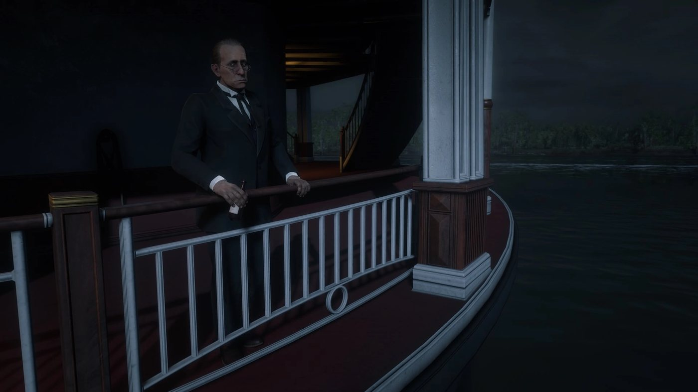
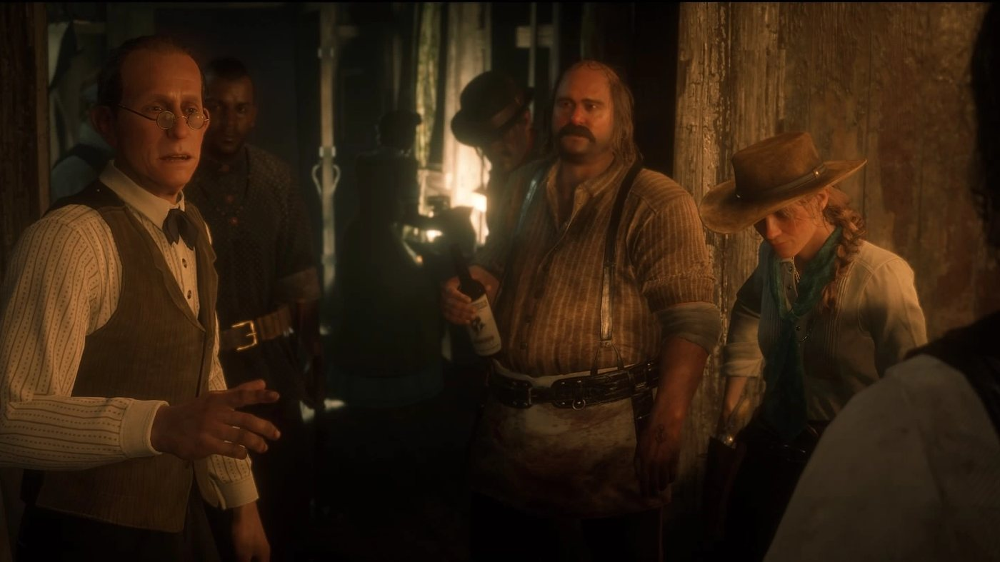
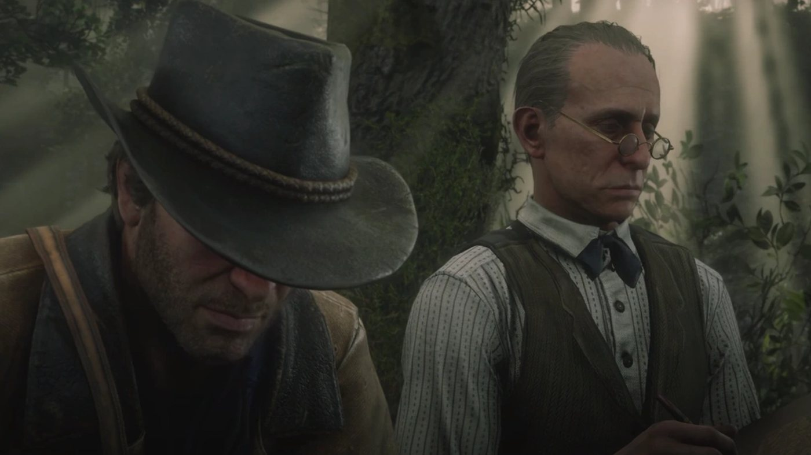
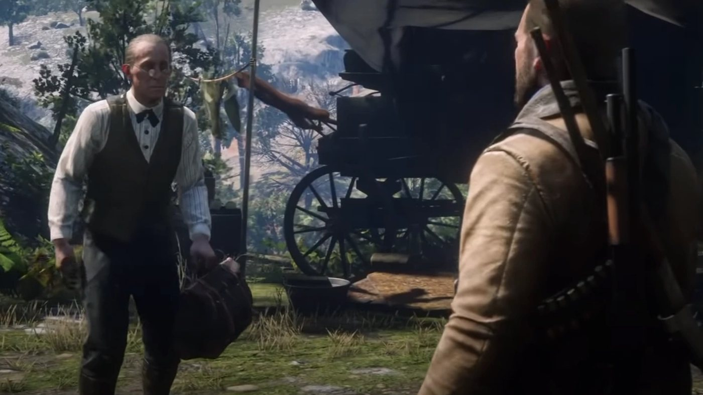